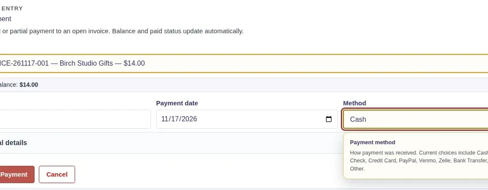
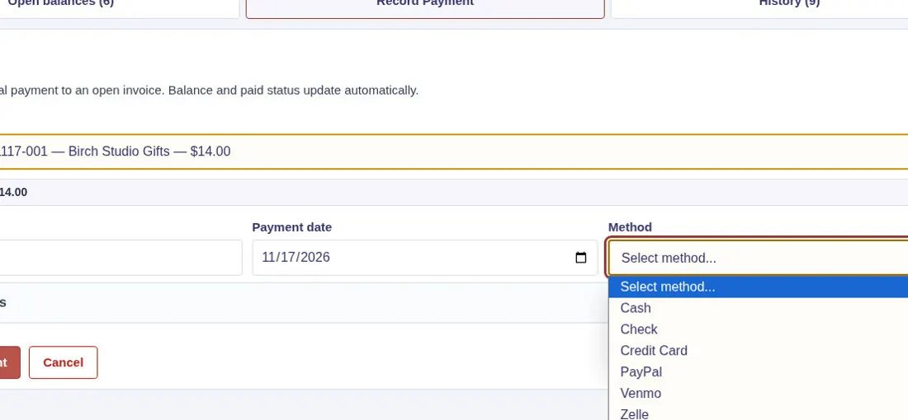
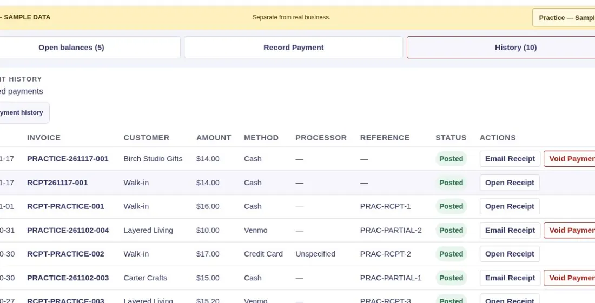

Payments
Record invoice payments and track the remaining balance.
Prepare a partial invoice payment
The videos use Practice — Sample Data. Follow along in Practice to try the examples, or use Business to enter your own records.
Practice disables real processor connections. Use External Card Processor to simulate recording a card payment. To connect Square or Stripe for real payments, open Business Settings → Payment Processing in Business.
Watch: Record an invoice payment
Recorded in Practice — Sample Data. Follow along in Practice without changing real Business records, or switch to Business to enter your own information. Practice records do not connect to live Square or Stripe processing.



Record a payment
- Open Payments or an unpaid Invoice.
- Select the Invoice and confirm the amount.
- Choose method and payment date.
- Select Record Payment.
Partial payments
Enter the amount received. The invoice balance updates, and you can record another payment later.
History and receipts
Open the payment record to review method, date and amount. Use the available receipt email action when needed.
Card payments
Stripe, Square and external payment methods have different confirmation/refund rules. Verify the processor status before recording manual adjustments. Do not record the same payment twice.
Correct a payment
Use the available reversal/void action rather than deleting financial history.